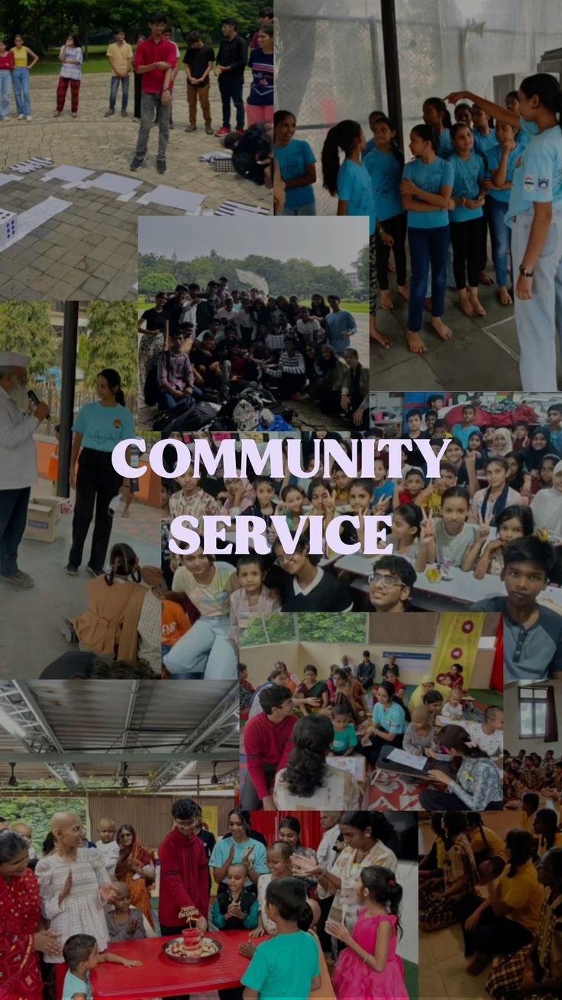
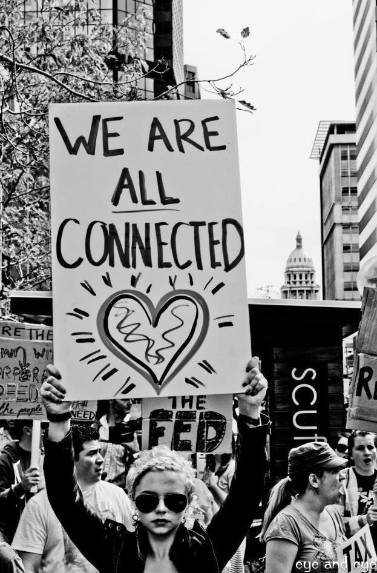
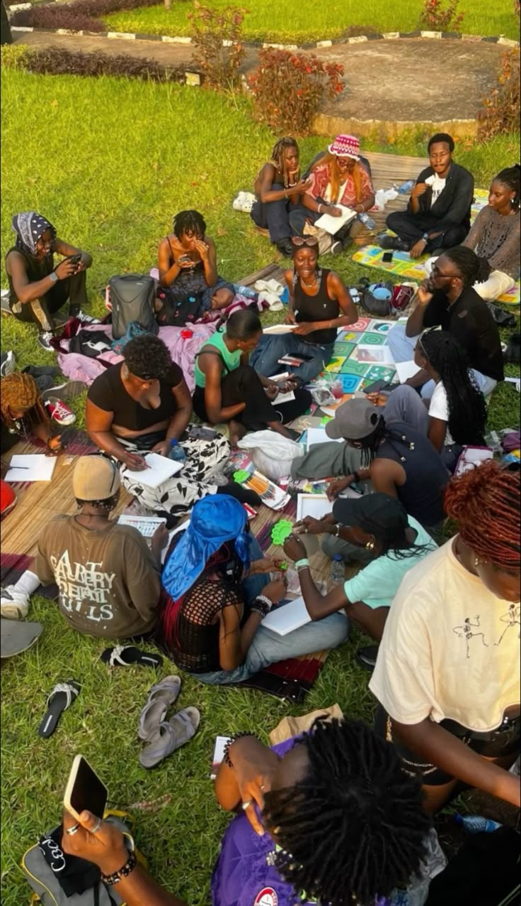
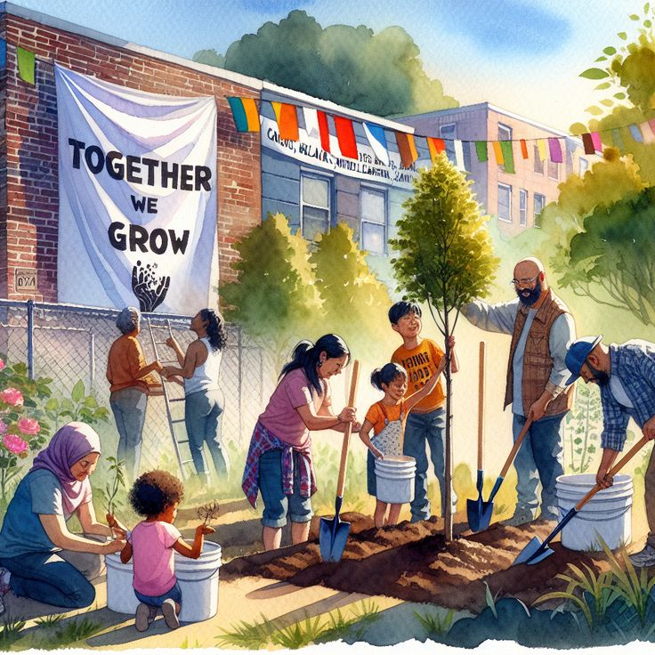
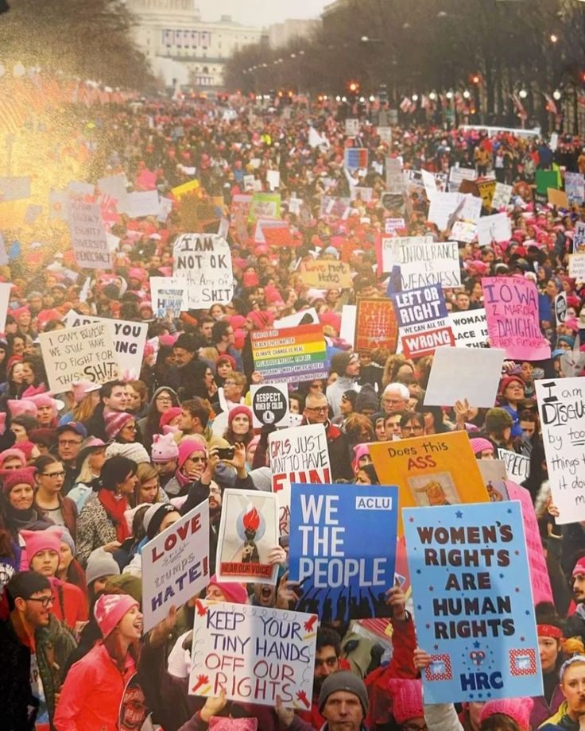

we're not calling it pinks anymore.
the internal reward system for femn is officially called cura now. it just fits the tone better. it feels more grounded, more intentional. femn is primarily an activism app. i've had to clarify this a lot recently, but it does not target a particular gender; it's about providing a safe, functional platform for marginalized communities to organize, share resources, and speak up without fear.
i also made a massive structural call recently regarding the architecture. no shadow ledger. we are completely dropping the direct financial features. i am not implementing it anymore. the operational risks were just too high, the regulatory landscape is a mess, and honestly, it was pulling focus away from the core mission of activism.





sometimes building a good app means knowing what to cut before it ever ships. you get these grand ideas in the initial brainstorming sessions, but when you look at the reality of deployment and security, you have to be ruthless. cura remains, the activism remains, but the unnecessary weight has been stripped out. it's leaner now. better.
the name change matters more than it might seem. names do something to a product's identity. pinks felt temporary, like a placeholder that had overstayed its welcome. cura feels like what it actually is. a care system. a way to recognize people who are doing real work in hard spaces and make sure that work is seen and rewarded in a meaningful way.
we ship what we ship. the rest gets cut. that's the job.
← Back to Blog